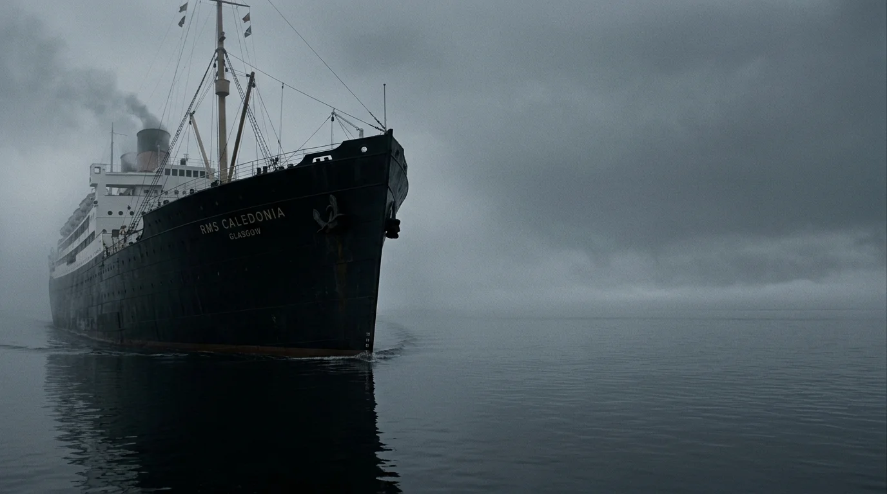
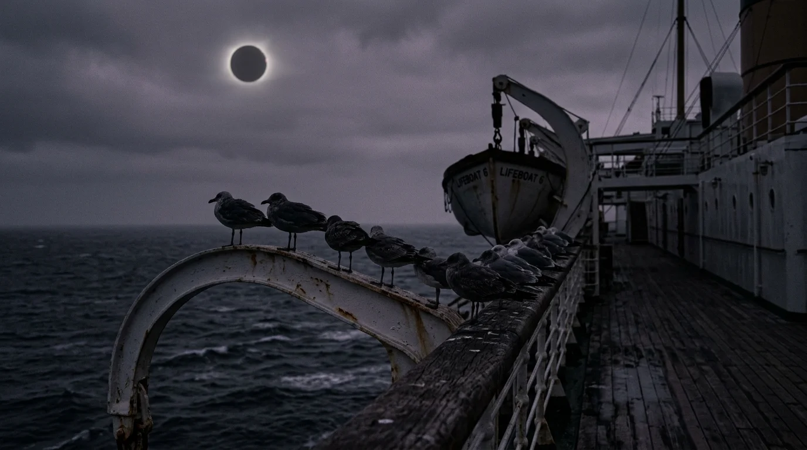
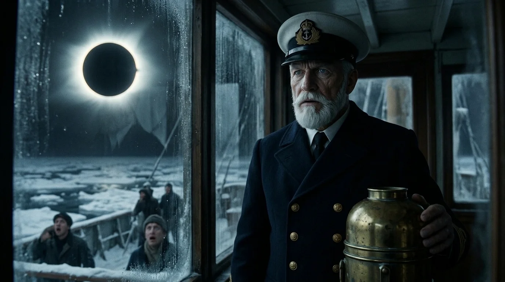
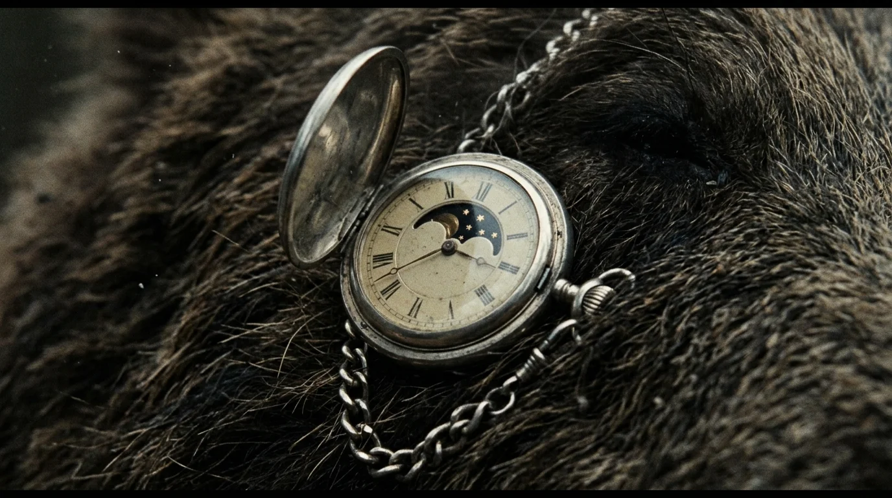
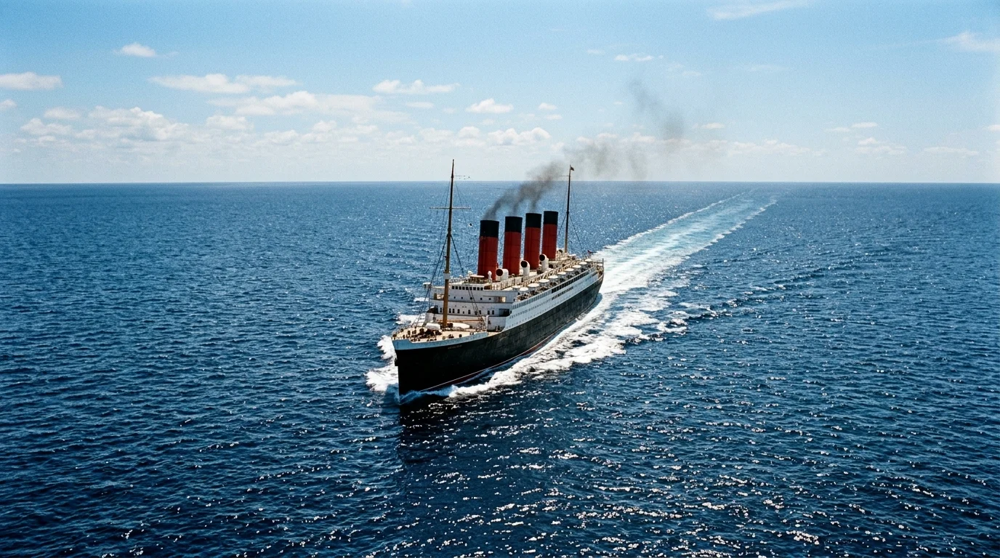

El zumbido grave de las cuatro turbinas de vapor ascendía a través de las planchas de teca del RMS Caledonia, transmitiendo a las suelas de los zapatos un temblor continuo que no cesaba jamás. Eran las diez de la mañana del cuarto día de travesía. A ochocientas millas de la costa de Terranova, el océano Atlántico se abría ante la proa como una inmensa llanura de plomo líquido, fría y sin olas, sobre la que el buque avanzaba a veintidós nudos cortando la niebla baja con la precisión de una cuchilla de carnicero.
En el salón de fumadores de segunda clase, Julián Romero extrajo su reloj de bolsillo de plata. Presionó el resorte de la corona y la tapa saltó con un chasquido limpio. Bajo las manecillas de acero azulado, una pequeña ventana semicircular mostraba la fase celeste: el disco de esmalte negro indicaba una luna nueva impecable. Faltaban diez días completos para el plenilunio; diez jornadas de margen que le permitirían desembarcar en Nueva York, tomar el tren del norte y encerrarse bajo llave en la cabaña de troncos que había alquilado en los montes Adirondack. Por primera vez en doce años, respiraba sin el peso de la bestia arañándole la nuca.
Frente a él, sentada a una mesa redonda de caoba con una taza de té y dos hojas de cristal, Clara Montero raspaba el hollín de una palmatoria para ahumar el vidrio.
—Si no oscurece bien la superficie, señor Romero, la corona le quemará las retinas antes de que pueda pestañear —dijo la joven con una sonrisa viva, mostrándole sus dedos tiznados—. El sobrecargo jura que el cielo quedará negro como el carbón durante cuatro minutos exactos. Una noche falsa en mitad del mediodía. ¿No le parece un milagro fascinante?
Julián forzó una cortesía distante mientras guardaba el reloj en el bolsillo del chaleco.
—Los astros fuera de su curso habitual nunca traen nada bueno, señorita Montero —respondió él en voz baja, con un tono seco que delataba un cansancio antiguo—. La luz diurna existe para mantener a raya lo que no debería despertar.
Clara soltó una carcajada limpia que resonó entre los paneles de madera barnizada. Recogió su bloc de apuntes botánicos, sopló el polvo de carbón sobre la alfombra y se levantó alisándose la falda verde musgo.
—Es usted un hombre demasiado sombrío para viajar en primavera. Suba a la cubierta de botes antes de las once; no querrá ser el único pasajero a bordo que se pierda el espectáculo del siglo.

A las once y cuarto, la sirena de vapor del castillo de proa aulló con tres toques secos y prolongados. En cuestión de minutos, los corredores y las escaleras de caracol se llenaron del rumor festivo de cientos de pasajeros que subían apresurados hacia las cubiertas superiores. Damas de primera clase con abrigos de visón, comerciantes de segunda provistos de catalejos y emigrantes de tercera que llenaban la barandilla de popa alzaban la vista protegida tras vidrios tiznados y trozos de celuloide oscuro.
En el alerón de babor del puente de mando, el capitán Thomas Sterling observaba el horizonte a través de sus prismáticos de latón. El oficial de derrota ajustaba el sextante a su lado con pulso firme.
—El barómetro permanece estable, señor —anunció el oficial—. Temperatura exterior, nueve grados. Pero el viento ha caído por completo. Parece como si el océano se estuviera parando.
Sterling no contestó. Una extrañeza pesada, densa como el agua de sentina, comenzaba a posarse sobre el navío. El azul brillante de la mañana atlántica se fue marchitando de forma imperceptible, virando hacia un gris ceniciento con reflejos violáceos que despojaba a los rostros de cualquier sombra cálida. Las gaviotas que seguían la estela de las hélices enmudecieron de pronto, desorientadas por el crepúsculo prematuro, dejándose caer pesadamente sobre los pescantes de los botes salvavidas.
Abajo, arrimado a la mampara del salón de música para eludir la aglomeración, Julián miraba hacia arriba con un vidrio oscuro entre los dedos. El mordisco negro ya devoraba más de tres cuartas partes del disco solar.
Fue entonces cuando la primera punzada le atravesó el esternón.
No fue un mareo común de travesía. Fue un calambre atroz, un desgarro biológico que le dobló las rodillas contra la cubierta de tablones. El reloj de bolsillo se deslizó de su chaleco y rebotó contra el suelo de madera. Julián intentó tragar aire, pero sus pulmones se negaron a expandirse; la masa del satélite, oculta a la vista de los hombres pero interpuesta de forma milimétrica en el cenit exacto entre la Tierra y el Sol, proyectaba una fuerza de marea brutal que reventaba cada uno de los diques que su voluntad había levantado durante años.
A las once y veintisiete minutos, la totalidad cayó sobre el Atlántico como una sábana de plomo.

El sol desapareció por completo tras la silueta negra de la luna, dejando únicamente la corona exterior: un halo de fuego blanco y espectral que temblaba en un firmamento repentinamente nocturno en el que titilaban planetas y constelaciones invernales. La temperatura en cubierta se desplomó de golpe cinco grados bajo cero; el vaho de los pasajeros formaba columnas densas entre los suspiros de admiración colectiva.
—¡Miren la corona! —exclamó alguien desde la proa—. ¡Es magnífica!
Los aplausos se ahogaron antes de nacer. Detrás de la fila de tumbonas de lona, el espasmo de Julián se convirtió en un estertor de huesos quebrándose.
El cuerpo del anticuario se arqueó hacia atrás con una violencia espantosa. Las costuras del traje de lana marengo cedieron bajo la repentina expansión de una musculatura hipertrofiada; los botones del chaleco saltaron como metralla, repicando contra los ventanales de cristal. Julián se llevó las manos al rostro intentando contener el alarido, pero sus dedos se alargaban quebrando las articulaciones en ángulos imposibles mientras unas uñas córneas y afiladas rasgaban la carne de sus mejillas. Un pelaje áspero, negro y grisáceo como el limo del fondo marino, brotó a través de los poros de su piel ensangrentada.
El dolor duró apenas diez segundos. Después, el raciocinio humano, la memoria de sus libros, sus precauciones y su miedo se extinguieron como una vela soplada por el vendaval.
Un aullido desgarrador, gutural y titánico sacudió las vigas del buque, apagando el rumor de las máquinas. Los pasajeros más cercanos giraron la cabeza con lentitud, creyendo que alguna válvula de vapor había reventado junto a la chimenea número dos. En su lugar, vieron erguirse sobre dos patas una mole de dos metros de pura voracidad, con mandíbulas descomunales de las que manaba saliva espesa y dos ojos amarillos que ardían con el fuego ciego de una sed milenaria.
La primera víctima fue un banquero londinense que sostenía un anteojo de bronce. La zarpa de la bestia cayó sobre su pecho con la contundencia de un martillo de forja, partiéndole el esternón y lanzándolo contra la borda de hierro.
El pánico estalló en un clamor histérico. La masa de ochocientas personas retrocedió en estampida hacia los accesos de las escaleras, pisoteándose sobre los tablones congelados mientras la fiera se abalanzaba sobre el gentío con una velocidad aterradora, mordiendo cuellos, quebrando extremidades y sembrando la cubierta de un reguero humeante de vísceras rojas que manchaban la nieve recién caída del eclipse.

Desde el puente de mando, el capitán Sterling vio la carnicería a través del cristal delantero. Por un instante de parálisis absoluta, creyó que sus ojos lo engañaban bajo la luz fantasmal de la corona solar. Luego vio a la bestia decapitar a un timonel de un solo zarpazo y reaccionó con la crudeza de quien ha navegado cuarenta inviernos.
—¡Oficial de guardia, el telégrafo de seguridad ahora mismo! —rugió Sterling, desenfundando su revólver Webley del cinto—. ¡Cierren todas las compuertas estancas de las cubiertas C y D! ¡Aíslen las cubiertas inferiores!
—Señor… todavía hay cientos de pasajeros bajando por los tiros de escalera —balbuceó el segundo oficial con el rostro descompuesto.
—¡He dicho que cierre las compuertas, maldita sea! Si esa cosa llega a los sollados de tercera, no quedará un alma viva para contar el viaje. ¡Séllelas ya!
Las sirenas de alarma neumática comenzaron a aullar en el vientre del barco. Por los pasillos alfombrados, enormes paneles de acero cayeron verticalmente guiados por contrapesos hidráulicos, cerrándose con un chasquido sordo que hizo temblar la estructura. Docenas de familias quedaron atrapadas en los descansillos ciegos, aporreando las planchas blindadas con puños ensangrentados mientras los gruñidos de la bestia resonaban cada vez más cerca, bajando por las escaleras principales alfombradas de rojo.
La criatura no buscaba refugio: cazaba por puro frenesí carnívoro. Reventó las puertas dobles del salón de música lanzando astillas de madera y cristal emplomado contra los espejos de pared. Dos marineros armados con hachas de incendio intentaron cerrarle el paso junto al piano de cola; la bestia los barrió sin esfuerzo aparente, aplastando sus cráneos contra las columnas doradas antes de lanzarse hacia la biblioteca acristalada de segunda clase, siguiendo el rastro inconfundible de sudor y miedo.
Clara Montero permanecía agazapada tras una barricada improvisada de sillones de orejas y mesas de lectura volcadas en el rincón más oscuro de la biblioteca. La respiración se le escapaba en sollozos entrecortados que ahogaba apretándose un pañuelo contra los labios. En la mano derecha sostenía una pesada barra de hierro que había arrancado de una barandilla rota; en el suelo, bajo los vidrios rotos de una vidriera, yacían dos pasajeros degollados.
Los pasos pesados de la fiera cruzaron el umbral, haciendo gemir las vigas del techo.

El animal medía casi un metro y medio a la cruz cuando avanzaba a cuatro patas. Olisqueaba el aire con espasmos rápidos, relamiéndose los colmillos empapados en sangre tibia. Clara vio cómo los lomos erizados de pelo negro se abrían paso derribando estanterías enteras de enciclopedias, cuyos lomos encuadernados en piel crujían bajo las garras.
La joven contuvo el aliento, pero el roce de su falda contra una moldura delató su posición.
La bestia giró la cabeza con violencia. Sus ojos amarillos, desprovistos de pupilas humanas, se clavaron directamente en el rincón donde ella temblaba. Clara levantó la barra de hierro dispuesta a vender cara su vida, mirando de frente el hocico deforme que avanzaba enseñando dos hileras de dientes amarillentos.
Entonces, un destello metálico llamó su atención entre las fauces y el pecho del monstruo.
Enredada entre las cerdas ensangrentadas del cuello colgaba una leontina de plata rota. De su extremo pendía la caja abierta de un reloj de bolsillo, con la pequeña ventana de esmalte que Clara había observado esa misma mañana en el salón de fumadores.
—Julián… —susurró ella, con una mezcla de horror y piedad que le heló la garganta—. Dios santo… era usted.
La criatura se detuvo a medio palmo de su rostro. Sus fosas nasales dilatadas absorbieron el aroma de la muchacha: el olor a trementina, hollín de vela y papel verjurado. Por un segundo minúsculo y milagroso, la mandíbula del monstruo vaciló; un gemido lastimero, más cercano al llanto de un hombre atrapado en un pozo sin fondo que al rugido de una fiera, vibró en el fondo de su garganta. Pero el influjo oscuro del cenit no admitía tregua: la bestia sacudió la cabeza con un chasquido de dientes y alzó la zarpa para aplastarla.
En ese instante supremo, el cielo sobre el Atlántico estalló en una llamarada cegadora.

La luna continuó su órbita inmutable y el disco solar reapareció por el flanco occidental, disparando el primer haz de luz directa con la violencia de un arco voltaico. Fue el anillo de diamantes: un destello blanco, ardiente y puro que atravesó los ventanales destrozados de la biblioteca, bañando el suelo de madera en una claridad abrasadora.
La criatura emitió un chillido agudo, inhumano, como si la luz solar fuera ácido vertido sobre sus carnes abiertas. Cayó de costado retorciéndose en convulsiones sobre los libros desparramados.
Clara observó paralizada la atrocidad inversa. Los músculos inflados comenzaron a consumirse arrugándose sobre sí mismos; las vértebras dorsales crujieron retrayéndose con chasquidos húmedos que parecían ramas quebrando en una hoguera. El pelaje negro cayó en mechones podridos sobre el suelo cubierto de charcos rojos, revelando una piel humana macerada en heridas, magulladuras y sangre ajena.
Cuando el sol del mediodía recuperó todo su brillo dorado sobre las olas tranquilas del océano, sobre la alfombra desgarrada no quedaba monstruo alguno.
Solo yacía Julián Romero.
Estaba completamente desnudo, encogido en posición fetal, temblando con espasmos agónicos mientras la consciencia retornaba a su mente como una marea ponzoñosa. Sus ojos grises, de nuevo humanos, se abrieron con lentitud. Miró sus propias manos: los dedos delgados de anticuario estaban cubiertos de tendones arrancados, carne desgarrada y sangre seca bajo las uñas rotas. Alrededor de él, en el salón acristalado, yacían los cuerpos destrozados de más de treinta personas que una hora antes paseaban vestidas de fiesta bajo la brisa marina.
Julián se incorporó a medias, apoyando la palma en el marco de la puerta. Una náusea insoportable le dobló el vientre; las lágrimas le limpiaron dos surcos limpios en el rostro cubierto de ceniza y horror.
Desde el pasillo exterior llegaron los golpes secos de las compuertas estancas abriéndose lentamente con un silbido de vapor. Se oyeron pasos apresurados: el sonido inconfundible de botas militares sobre las planchas de hierro y el amartillamiento de rifles y escopetas de la tripulación que avanzaba inspeccionando los despojos.
Clara permanecía inmóvil en el rincón, con la barra de hierro en la mano y la mirada clavada en el hombre arrodillado. Ninguno de los dos pronunció palabra. Julián miró por la ventana abierta hacia la inmensidad azul del océano, comprendiendo que el Caledonia navegaba a cientos de millas de cualquier tierra habitada y que, para los crímenes cometidos bajo la sombra del eclipse, la condena en mitad del mar no admitiría juicio ni piedad.